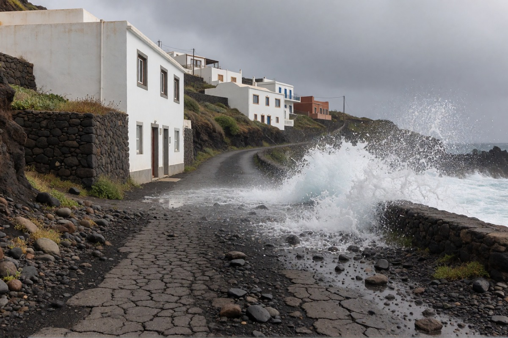

Sicilia · 23 novembre 2026
Lipari, il mare invade il lungomare di Acquacalda

Le onde sono arrivate fino alle case di San Gaetano e la strada litoranea è chiusa: si teme che il mare abbia scavato alla base del muraglione. Stromboli, Ginostra e Panarea restano isolate, e il cantiere di protezione non è ancora partito.
di Franco Zanghì
Il mare in tempesta ha invaso il lungomare di Acquacalda, il piccolo borgo sulla costa nord di Lipari, la più grande delle isole Eolie, in provincia di Messina. È successo lunedì 23 novembre 2026, con il vento forte che spingeva le onde fin sotto le case. La notizia l'hanno data la Gazzetta del Sud e il Giornale di Sicilia, e l'ANSA l'ha ripresa.
Le onde sono arrivate fino alle pertinenze delle abitazioni, in località San Gaetano, trascinando pietre, sabbia e detriti. I danni segnalati alle case e alle attività della zona, scrive l'ANSA, sono di lieve entità.
La strada e il muraglione
La preoccupazione più grande è un'altra. Il mare potrebbe aver continuato a scavare alla base del muraglione su cui poggia la strada litoranea: lo si saprà soltanto quando le onde si saranno calmate. Intanto la strada è chiusa, e non ci passano né i pedoni né le auto.
Il giorno dopo, martedì 24, la testata 98zero ha fotografato l'asfalto divelto in più punti in prossimità del bordo della carreggiata, e ampi tratti coperti da sabbia e pietre. Nessuna delle fonti consultate indica una data di riapertura.
Le isole isolate
Non è stata soltanto Acquacalda. Secondo il Giornale di Sicilia una mareggiata ha spazzato anche l'area del porto di Ginostra, a Stromboli. Lunedì mattina, riferisce CanaleSicilia, era sospesa gran parte delle corse da e per l'arcipelago, con onde oltre i tre metri e raffiche di vento fino a 72 chilometri orari: da Milazzo è partita soltanto la nave Nerea della Siremar, che secondo il Giornale di Sicilia è riuscita ad arrivare a Filicudi con onde alte quattro metri, portando anche i generi di prima necessità, e ha saltato lo scalo di Alicudi.
Martedì i collegamenti sono ripresi solo in parte: Lipari, Vulcano e Salina risultavano regolarmente collegate, mentre Alicudi, Filicudi, Panarea, Stromboli e la frazione di Ginostra restavano isolate. Le previsioni davano un miglioramento graduale dalla serata, con la possibilità di tornare alla normalità da mercoledì 25.
Il cantiere che non parte
Per Acquacalda una risposta dovrebbe arrivare. A inizio novembre, scrive l'ANSA, è stato aggiudicato l'appalto per il primo lotto dei lavori di protezione dell'abitato. Ora si aspetta che quei lavori comincino.
Quindi, per riassumere: il mare sul lungomare di Acquacalda, la strada litoranea chiusa, le isole più piccole isolate. E un cantiere, quello che dovrebbe proteggere il borgo, che non è ancora cominciato.
Fonti
- ANSA Sicilia, «Mareggiata a Lipari sulla frazione di Acquacalda», 23 novembre 2026
- Gazzetta del Sud, «Lipari, emergenza mareggiate ad Acquacalda: il mare ha invaso il lungomare», 23 novembre 2026
- Giornale di Sicilia (edizione di Messina), «Lipari, nuova mareggiata ad Acquacalda: danni al lungomare, presto al via i lavori», 24 novembre 2026
- 98zero, «Maltempo alle Eolie, danni dopo la mareggiata sul lungomare di Acquacalda», 24 novembre 2026
- CanaleSicilia, «Maltempo alle Eolie, sospesi gran parte dei collegamenti marittimi», 23 novembre 2026
Lo scavo alla base del muraglione è un'ipotesi riferita dall'ANSA e non una verifica tecnica: sarà accertato soltanto a mare calmo. Il titolo di 98zero parla di una voragine sul lungomare, ma il testo dell'articolo descrive asfalto divelto in più punti e non indica un punto preciso: qui si riporta quest'ultima descrizione. L'arrivo della nave Nerea a Filicudi con onde di quattro metri è riferito dal Giornale di Sicilia; il giorno dopo 98zero indicava Filicudi fra le isole ancora isolate. La data di inizio dei lavori di protezione dell'abitato, alla data di pubblicazione, non era fissata.